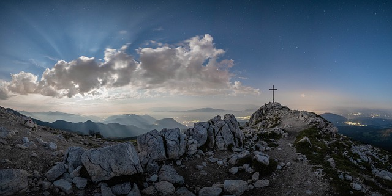
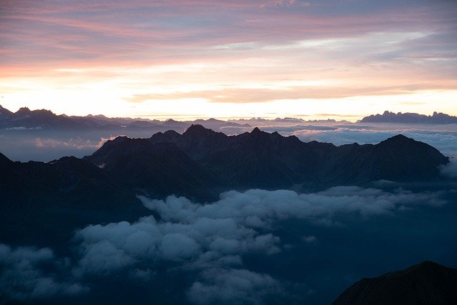

this is a short project about mountains and mabey a bit about me

Image by Image by
Felix Merler from Pixabay

Image by Image by
Felix Merler from Pixabay

Image by Image by -
- Felix Merler from Pixabay
I have been on many mountains in my life I hope you have a nice day I got to go to track BYE
- Felix Merler from Pixabay